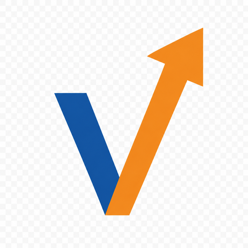

Brand Anatomy
Navy
#1054A2 Orange
#F09020 Bridge Brown
#AB8057 White
Black
Color Lockups
Pass
S=navy, O=brown, LUTIONS=orange, V-arrow=orange
Pass
THRY + MARKETING + S = white, O = light brown, LUTIONS = orange
Monochrome
Pass
All strokes #000. For single-color print, fax, embroidery.

Pass
All strokes #fff. For dark photo overlays, video bumpers.
Wordmark + Mark
Pass
THRYV with integrated orange V-arrow. For tight horizontal lockups.
Pass
Standalone V-arrow. Source for favicons + social avatars.
Social Avatars
Pass
Full lockup, transparent square, ~12% padding.
Pass
Reversed lockup on solid navy. For X/IG/LI profile photos.
Favicons (regenerated 2026-05-15 from mark)
Pass
Resized via LANCZOS from the clean mark. Multi-res
favicon.ico also generated.
Pass
For PWA / iOS / Android home-screen icons.